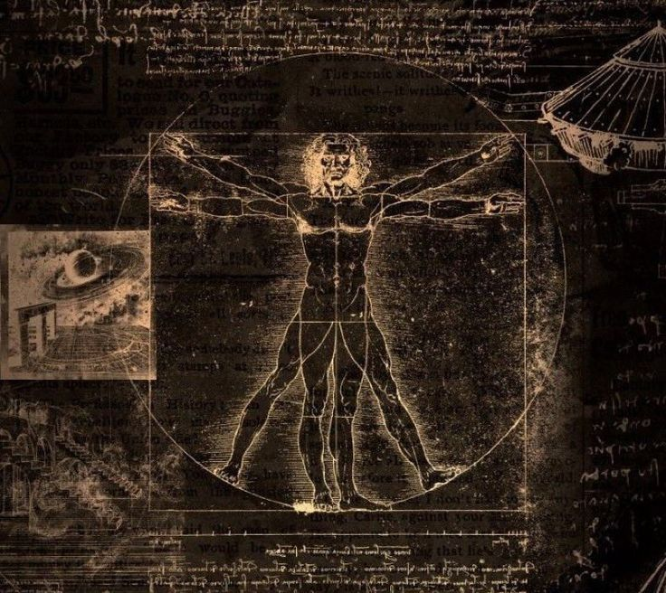
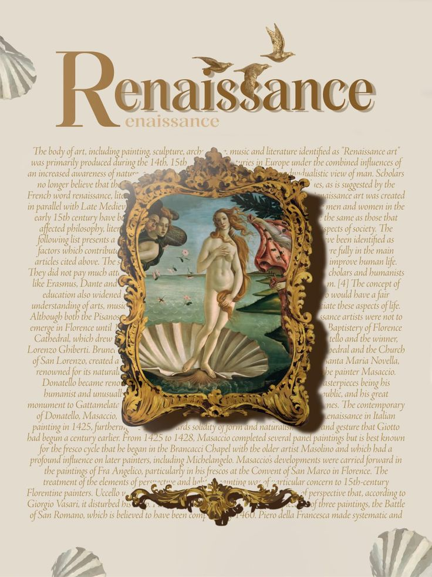

Черты эпохи
Центры Возрождения
Историки делят эпоху Возрождения на четыре этапа:
Проторенессанс тесно связан со средневековьем, собственно он и сложился в Позднем средневековье в русле византийских, романских и готических традиций.Он делится на два подпериода: первый — до смерти художника Джотто ди Бондоне (1337). В первый период совершаются важнейшие открытия, живут и работают ярчайшие мастера.
Период так называемого Раннего Возрождения охватывает собой в Италии время с 1420 по 1500 года. В течение этих восьмидесяти лет искусство ещё не вполне отрешается от преданий недавнего прошлого, но пробует добавлять к ним элементы, заимствованные из классической древности.
Третий период эпохи Возрождения — время самого интенсивного развития новой гуманистической культуры — принято называть «Высоким Возрождением». Он простирается в Италии приблизительно с 1500 по 1527 год. В это время центр влияния итальянского искусства из Флоренции перемещается в Рим, благодаря вступлению на папский престол Юлия II. Вершина эпохи Возрождения ознаменована творчеством трёх великих итальянских мастеров — Леонардо да Винчи (1452—1519), Микеланджело Буонарроти (1475—1564) и Рафаэля Санти (1483—1520).
Позднее Возрождение в Италии охватывает период с 1530-х по 1590—1620-е годы. Искусство и культура этого времени настолько разнообразны по своим проявлениям, что сводить их к одному знаменателю можно только с большой долей условности.В Парме работал Корреджо, в Риме и Неаполе — Караваджо и его последователи караваджисты. В Венеции творили живописец Тициан и архитектор Палладио, чьё творчество имело мало общего с кризисными явлениями в искусстве Флоренции и Рима.
Черты эпохи:

«Витрувианский человек» Леонардо да Винчи (около 1490 года). Рисунок показывает идеальные пропорции человеческого тела и стал символом гуманизма эпохи Возрождения.
Центры Возрождения
